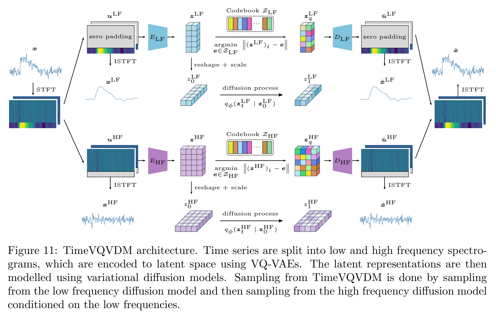

Time Series Generation using Diffusion Models
For my Master Thesis, I wrote about Generative AI for Time Series Generation. This pair shares two key attributes: they require follow-up observations to confirm that they really exist, and if they do, they're very... weird. They're both apparently huge, bigger than the Earth, and therefore unlike any moons we have in our own solar system. That's exciting, and suggests that these follow-up observations could tell us about general moon-formation processes.
But, we'd probably learn a lot more about those processes if we could find smaller moons, ideally some analogous to those in our Solar System. My first-year project at Columbia is to check if that's within the capabilities of powerful observatories like Hubble and JWST. Although the project is ongoing, it looks like it is! Hubble would likely struggle to detect small moons in a small number of transits, but there are a handful of planets that could host small companions which are detectable with JWST. Stay tuned for a paper describing why!
 From my thesis at NTNU, Spring 2023, Trondheim, NorwayFewest Moves solving of Rubik's cubes
Although I haven't looked at Jupiter's largest moons (or any moons *within* the Solar System) as a graduate student, I really enjoyed working on them as an undergrad. While I was at Caltech, I worked on reducing and analyzing Hubble STIS data of the Galilean moons, especially of Io. I converted spectra into many spatially resolved maps of the surface in different wavelengths, then looked for absorption features with coherent patterns across the globe.
Below is an interactive map of one of these features, where pink marks regions with strong absorption and blue marks where the feature is weaker. Playing/clicking through the frames changes the overlayed shaded-in geologic units, all of which were identified and mapped by the USGS. No geologic unit cleanly aligned with this absorption feature. This was a fun project- were I to do this over, I'd at least change the map projection though.
Generative AI Applications
Finally, I'm also interested in our outer solar system and distant Trans-Neptunian Objects. Later in 2022 I'll attempt to recover a candidate object with few detections using the 2.4m Hiltner Telescope at the MDM Observatory. Here's a simulation of many possible RA/Dec locations of a hypothetical distant TNO several years after initial detection at the "x":